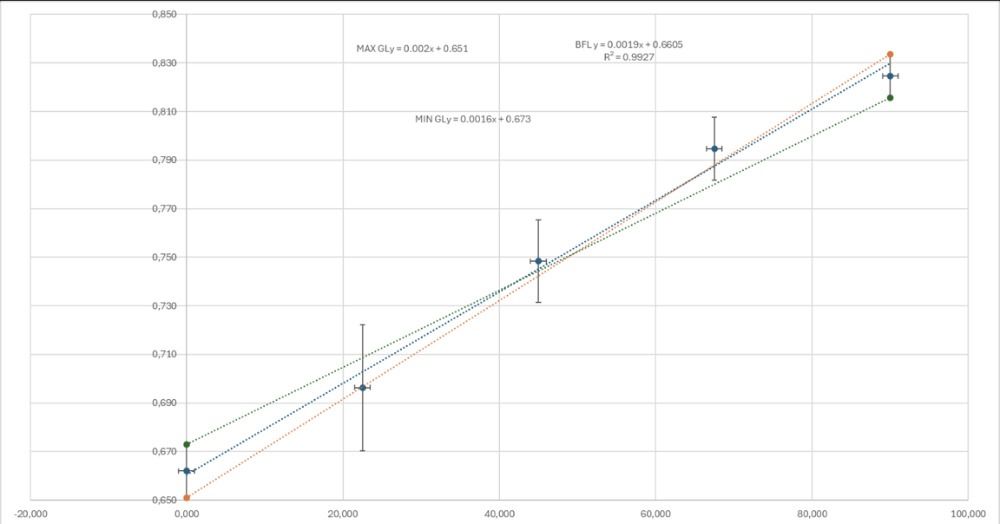
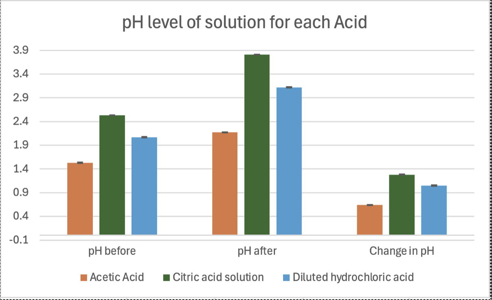
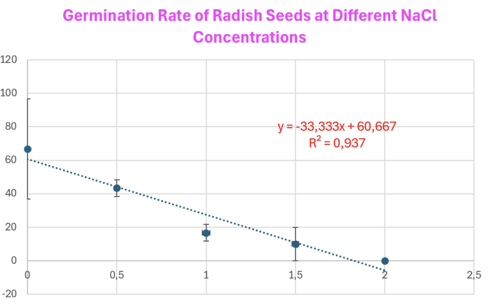

Our Journey through Physics, Chemistry, and Biology!
We are a group of IB students working together to explore science through hands-on experiments. Our project covers three exciting areas: Physics, Chemistry, and Biology. On this site, you'll see our process, results, and what we learned along the way!
Computer Science
Physics
Chemistry
Biology
As the angle of incidence of the light source decreases (meaning the light hits the solar panel more directly), the voltage and current output of the solar panel will increase.
Set up solar panel connected to multimeter.
Shine light at 0° angle, record current and voltage.
Change angle in steps (30°, 60°, 90°), record values.
Compare how electrical output varies with angle.
The results of this investigation support the hypothesis that the voltage output of a solar panel decreases as the angle of incidence increases. As expected, the highest voltage was recorded when the light struck the panel parallelly (90°), and the voltage steadily decreased as the panel was tilted away from the light source.
Hydrochloric acid will result in the greatest pH increase and the largest decrease in CaCO₃ mass.

Measure and place 1.00 g of CaCO₃ into a reaction flask.

Add acid to the flask, start the timer, and allow the reaction to proceed.

Filter and weigh any remaining CaCO₃; measure the final pH.

Record all data and repeat for each acid type.
These results imply that the degree of the acid-carbonate reaction is directly influenced by the acid's strength and the quantity of protons (H⁺ ions) that are available. The more ionized the acid is in the water, the more effectively it reacts with the carbonate, releasing CO₂ and dissolving more of the solid.
Increasing water salinity will decrease the germination rate and seedling growth due to osmotic stress
Prepare 5 NaCl concentrations and label 5 beakers with their respective salt concentrations
Count and place 10 radish seeds on each of 15 labeled petri dishes (3 trials per concentration) with filter paper.
Use a dropper to apply 3 mL of the corresponding NaCl solution to each dish
After 24 hours, count germinated seeds, calculate percentages
The hypothesis was confirmed: higher concentrations of NaCl hinder seed germination. This occurs because glycophytes like Raphanus sativus experience osmotic stress in saline solutions, reducing water uptake and preventing the breaking of seed dormancy
